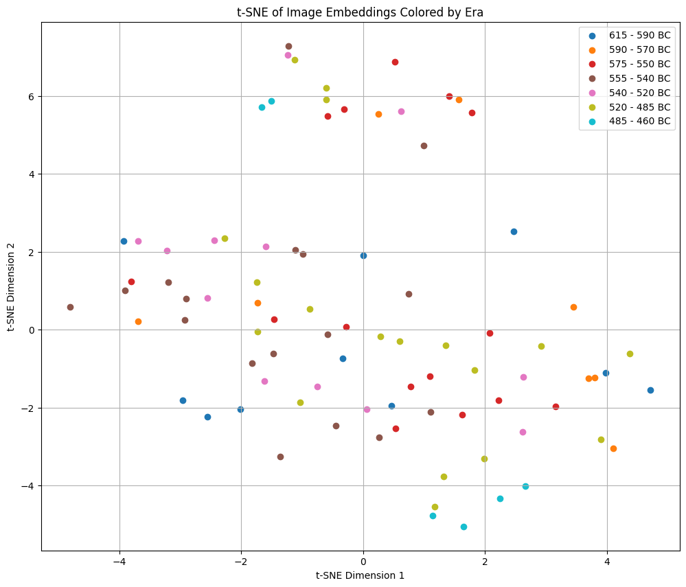
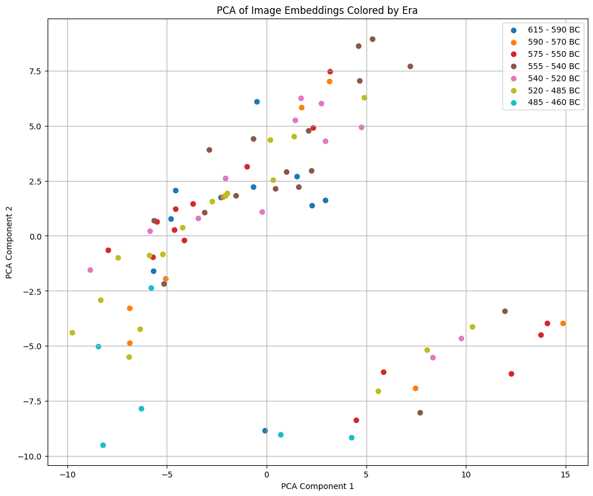
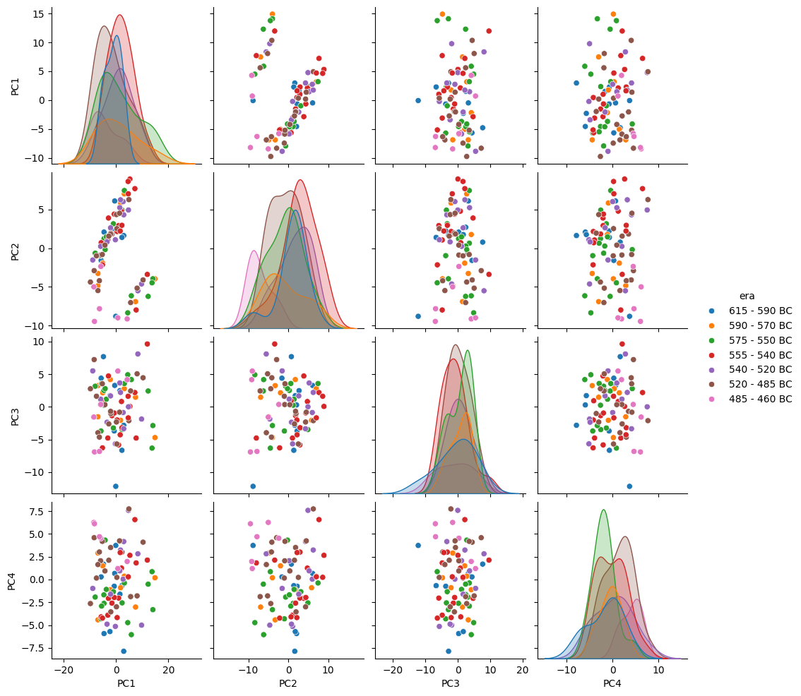
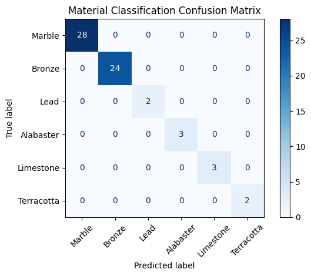
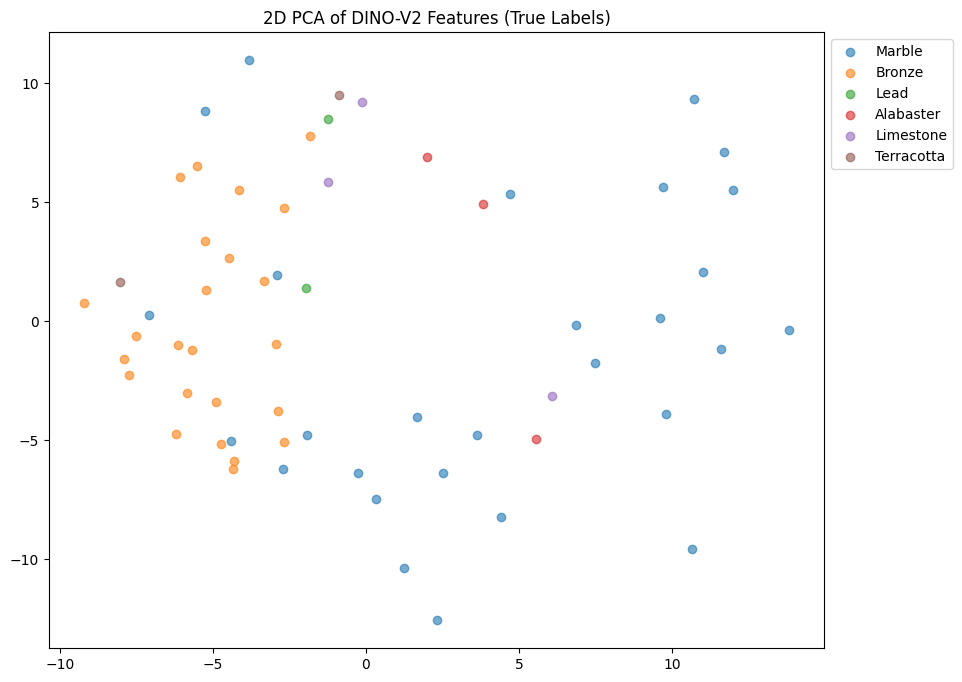
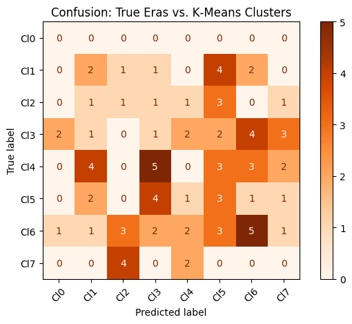
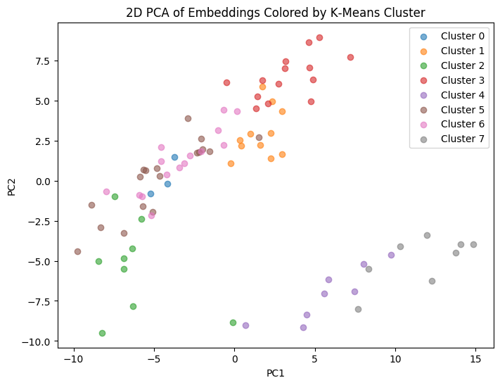

import pandas as pddf = pd.read_csv("../data/head_dataset_labeled.csv")
df.head()| filename | page | group | era | |
|---|---|---|---|---|
| 0 | page188_img01_photo13.jpg | 188 | SOUNION GROUP | 615 - 590 BC |
| 1 | page196_img01_photo5.jpg | 196 | SOUNION GROUP | 615 - 590 BC |
| 2 | page200_img01_photo7.jpg | 200 | SOUNION GROUP | 615 - 590 BC |
| 3 | page202_img01_photo3.jpg | 202 | SOUNION GROUP | 615 - 590 BC |
| 4 | page202_img01_photo4.jpg | 202 | SOUNION GROUP | 615 - 590 BC |
import torch
import numpy as np
from sklearn.manifold import TSNE
import matplotlib.pyplot as plt
from PIL import Image
import os
from transformers import AutoImageProcessor, Dinov2Model
from tqdm.notebook import tqdm # Import tqdm for progress bardevice = torch.device("cuda" if torch.cuda.is_available() else "cpu")
model = Dinov2Model.from_pretrained("facebook/dinov2-base").to(device)
processor = AutoImageProcessor.from_pretrained("facebook/dinov2-base")Using a slow image processor as `use_fast` is unset and a slow processor was saved with this model. `use_fast=True` will be the default behavior in v4.48, even if the model was saved with a slow processor. This will result in minor differences in outputs. You'll still be able to use a slow processor with `use_fast=False`.batch_size = 32
embeddings = []
image_directory = "../data/richter_kouroi_head_front_only"
# Collect filenames and eras for batching
filenames = df['filename'].tolist()
eras = df['era'].tolist()
for i in tqdm(range(0, len(filenames), batch_size), desc="Processing Images in Batches"):
batch_filenames = filenames[i:i + batch_size]
images = []
valid_indices = []
for j, filename in enumerate(batch_filenames):
image_path = os.path.join(image_directory, filename)
try:
image = Image.open(image_path).convert('RGB') # convert to RGB to avoid issues
images.append(image)
valid_indices.append(i + j) # Keep track of valid indices for later
except FileNotFoundError:
print(f"Image not found at: {image_path}")
except Exception as e:
print(f"Error processing image {filename}: {e}")
if len(images) == 0:
continue # Skip empty batches
# Process the batch of images
inputs = processor(images=images, return_tensors="pt").to(device)
with torch.no_grad():
outputs = model(**inputs)
last_hidden_states = outputs.last_hidden_state
# Mean pooling over patches per image in batch
batch_embeddings = last_hidden_states.mean(dim=1).cpu().numpy()
# Append embeddings maintaining order corresponding to valid images
embeddings.extend(batch_embeddings)
embeddings = np.array(embeddings)
np.save('dinov2_image_embeddings.npy', embeddings)
# Proceed with your t-SNE and plotting code...
tsne = TSNE(n_components=2, init='pca', method='exact')
tsne_embeddings = tsne.fit_transform(embeddings)
plt.figure(figsize=(12, 10))
unique_eras = df['era'].unique()
colors = plt.cm.get_cmap('tab10', len(unique_eras))
for i, era in enumerate(unique_eras):
indices = df[df['era'] == era].index
plt.scatter(tsne_embeddings[indices, 0], tsne_embeddings[indices, 1], color=colors(i), label=era)
plt.title('t-SNE of Image Embeddings Colored by Era')
plt.xlabel('t-SNE Dimension 1')
plt.ylabel('t-SNE Dimension 2')
plt.legend()
plt.grid(True)
plt.show()C:\Users\Kaiyan Zhang\AppData\Local\Temp\ipykernel_16612\3958630150.py:7: MatplotlibDeprecationWarning: The get_cmap function was deprecated in Matplotlib 3.7 and will be removed in 3.11. Use ``matplotlib.colormaps[name]`` or ``matplotlib.colormaps.get_cmap()`` or ``pyplot.get_cmap()`` instead.
colors = plt.cm.get_cmap('tab10', len(unique_eras))
!pip install plotly==5.14.0 --quietimport plotly.express as px# Create a DataFrame for Plotly
plotly_df = pd.DataFrame({
'TSNE_Dim1': tsne_embeddings[:, 0],
'TSNE_Dim2': tsne_embeddings[:, 1],
'Era': df['era'].tolist(), # Use the 'era' column from your original df
'Filename': df['filename'].tolist() # Include the filenames
})
fig = px.scatter(
plotly_df,
x='TSNE_Dim1',
y='TSNE_Dim2',
color='Era',
hover_data=['Filename'], # Show filename when hovering
title='Interactive t-SNE of Image Embeddings Colored by Era'
)
fig.show()c:\Users\Kaiyan Zhang\AppData\Local\Programs\Python\Python312\Lib\site-packages\plotly\express\_core.py:1983: FutureWarning: When grouping with a length-1 list-like, you will need to pass a length-1 tuple to get_group in a future version of pandas. Pass `(name,)` instead of `name` to silence this warning.
sf: grouped.get_group(s if len(s) > 1 else s[0])Unable to display output for mime type(s): application/vnd.plotly.v1+jsonfrom sklearn.decomposition import PCA
# Perform PCA instead of t-SNE
pca = PCA(n_components=2)
pca_embeddings = pca.fit_transform(embeddings)
# Plot the PCA result
plt.figure(figsize=(12, 10))
unique_eras = df['era'].unique()
colors = plt.cm.get_cmap('tab10', len(unique_eras))
for i, era in enumerate(unique_eras):
indices = df[df['era'] == era].index
plt.scatter(pca_embeddings[indices, 0], pca_embeddings[indices, 1], color=colors(i), label=era)
plt.title('PCA of Image Embeddings Colored by Era')
plt.xlabel('PCA Component 1')
plt.ylabel('PCA Component 2')
plt.legend()
plt.grid(True)
plt.show()C:\Users\Kaiyan Zhang\AppData\Local\Temp\ipykernel_16612\119444610.py:10: MatplotlibDeprecationWarning:
The get_cmap function was deprecated in Matplotlib 3.7 and will be removed in 3.11. Use ``matplotlib.colormaps[name]`` or ``matplotlib.colormaps.get_cmap()`` or ``pyplot.get_cmap()`` instead.

from sklearn.decomposition import PCA
# e.g. compute 5 principal components
pca = PCA(n_components=6)
pca_embeddings = pca.fit_transform(embeddings)
# now pca_embeddings.shape == (n_samples, 5)
pc_df = pd.DataFrame(
pca_embeddings[:, :6],
columns=['PC1','PC2','PC3','PC4', 'PC5', 'PC6']
)
pc_df['era'] = df['era'].values
import seaborn as sns
sns.pairplot(pc_df, hue='era', vars=['PC1','PC2','PC3','PC4'])
plt.show()

# Create a DataFrame for Plotly
plotly_df = pd.DataFrame({
'TSNE_Dim1': pca_embeddings[:, 0],
'TSNE_Dim2': pca_embeddings[:, 1],
'Era': df['era'].tolist(), # Use the 'era' column from your original df
'Filename': df['filename'].tolist() # Include the filenames
})
fig = px.scatter(
plotly_df,
x='TSNE_Dim1',
y='TSNE_Dim2',
color='Era',
hover_data=['Filename'], # Show filename when hovering
title='Interactive t-SNE of Image Embeddings Colored by Era'
)
fig.show()c:\Users\Kaiyan Zhang\AppData\Local\Programs\Python\Python312\Lib\site-packages\plotly\express\_core.py:1983: FutureWarning:
When grouping with a length-1 list-like, you will need to pass a length-1 tuple to get_group in a future version of pandas. Pass `(name,)` instead of `name` to silence this warning.
Unable to display output for mime type(s): application/vnd.plotly.v1+jsonmodel = Dinov2Model.from_pretrained(
"facebook/dinov2-base",
output_attentions=True, # <-- get all the self-attention weights
).eval().to(device)
processor = AutoImageProcessor.from_pretrained("facebook/dinov2-base")
img = Image.open("../data/richter_kouroi_head_front_only/page286_img01_photo3.jpg").convert("RGB")
inputs = processor(images=img, return_tensors="pt").to(device)
with torch.no_grad():
outputs = model(**inputs)
# outputs.attentions: tuple of length L (num layers), each (batch=1, heads=H, seq_len=T, seq_len=T)
attns = [attn[0].mean(dim=0).cpu() # average over heads
for attn in outputs.attentions]
T = attns[0].size(-1) # total tokens = 1 (CLS) + num_patches
rollout = torch.eye(T)
for layer_attn in attns:
# Add identity (residual) and renormalize rows
layer_aug = layer_attn + torch.eye(T)
layer_aug = layer_aug / layer_aug.sum(dim=-1, keepdim=True)
# Propagate
rollout = layer_aug @ rollout
# Extract CLS → patch attentions (skip the CLS→CLS token at rollout[0,0])
patch_attn = rollout[0, 1:] # shape: (num_patches,)
# Reshape to 2D grid
grid_size = int(np.sqrt(patch_attn.size(0)))
heatmap = patch_attn.reshape(grid_size, grid_size).numpy()
heatmap_tensor = torch.tensor(heatmap).unsqueeze(0).unsqueeze(0) # (1,1,G,G)
heatmap_up = torch.nn.functional.interpolate(
heatmap_tensor,
size=img.size[::-1], # (height, width)
mode="bilinear",
align_corners=False
)[0,0].numpy()
plt.figure(figsize=(6,6))
plt.imshow(img, alpha=0.8)
plt.imshow(heatmap_up, cmap="inferno", alpha=0.5)
plt.axis("off")
plt.title("DINO-V2 Attention Rollout Heatmap")
plt.show()import os
import torch
import torch.nn as nn
import torch.optim as optim
from torch.utils.data import Dataset, DataLoader
from PIL import Image
import pandas as pd
from transformers import AutoImageProcessor, Dinov2Model
from tqdm.auto import tqdm
# ——————————————————————————————————————
# 1) Hyperparameters & paths
# ——————————————————————————————————————
IMAGE_DIR = "../data/richter_kouroi_complete_front_only"
CSV_PATH = "../data/complete_sculpture_dataset_labeled.csv" # with columns ['filename','era']
BATCH_SIZE = 32
LR = 1e-3
EPOCHS = 15
DEVICE = torch.device("cuda" if torch.cuda.is_available() else "cpu")
MODEL_NAME = "facebook/dinov2-base"
# Map your era strings to integer labels
ERA2IDX = {
'615 - 590 BC': 0,
'590 - 570 BC': 1,
'575 - 550 BC': 2,
'555 - 540 BC': 3,
'540 - 520 BC': 4,
'520 - 485 BC': 5,
'485 - 460 BC': 6,
}
MAT2IDX = {
'Marble': 0,
'Bronze': 1,
'Lead': 2,
'Alabaster': 3,
'Limestone': 4,
'Terracotta': 5,
}
# ——————————————————————————————————————
# 2) Dataset & DataLoader
# ——————————————————————————————————————
class KouroiEraDataset(Dataset):
def __init__(self, csv_path, img_dir, processor, mat2idx):
self.df = pd.read_csv(csv_path)
self.img_dir = img_dir
self.processor = processor
self.mat2idx = MAT2IDX
def __len__(self):
return len(self.df)
def __getitem__(self, idx):
row = self.df.iloc[idx]
img = Image.open(os.path.join(self.img_dir, row.filename)).convert("RGB")
# turn to model inputs
inputs = self.processor(images=img, return_tensors="pt")
# remove batch dim
for k,v in inputs.items():
inputs[k] = v.squeeze(0)
label = self.mat2idx[row.material]
return inputs, label
# Initialize processor + dataset
processor = AutoImageProcessor.from_pretrained(MODEL_NAME)
dataset = KouroiEraDataset(CSV_PATH, IMAGE_DIR, processor, MAT2IDX)
loader = DataLoader(dataset, batch_size=BATCH_SIZE, shuffle=True, num_workers=0)
# ——————————————————————————————————————
# 3) Build model: frozen DINO + MLP head
# ——————————————————————————————————————
class EraClassifier(nn.Module):
def __init__(self, backbone_name, num_classes):
super().__init__()
# load DINO‐V2 without gradient updates
self.backbone = Dinov2Model.from_pretrained(
backbone_name, output_hidden_states=False, output_attentions=False
)
for p in self.backbone.parameters():
p.requires_grad = False
embed_dim = self.backbone.config.hidden_size
# a simple 2‑layer MLP head
self.head = nn.Sequential(
nn.Linear(embed_dim, embed_dim//2),
nn.ReLU(inplace=True),
nn.Dropout(0.2),
nn.Linear(embed_dim//2, num_classes)
)
def forward(self, pixel_values):
# pixel_values: (B,3,H,W)
outputs = self.backbone(pixel_values=pixel_values)
# mean‐pool the patch embeddings: (B, num_patches, D) → (B,D)
x = outputs.last_hidden_state.mean(dim=1)
logits = self.head(x)
return logits
model = EraClassifier(MODEL_NAME, num_classes=len(MAT2IDX)).to(DEVICE)
# ——————————————————————————————————————
# 4) Training loop
# ——————————————————————————————————————
criterion = nn.CrossEntropyLoss()
optimizer = optim.Adam(model.head.parameters(), lr=LR)
# note: we only pass head.parameters() so backbone stays frozen
for epoch in range(1, EPOCHS+1):
model.train()
total_loss = 0
for batch in tqdm(loader, desc=f"Epoch {epoch}/{EPOCHS}"):
inputs, labels = batch
# move to device
inputs = {k:v.to(DEVICE) for k,v in inputs.items()}
labels = labels.to(DEVICE)
optimizer.zero_grad()
logits = model(**inputs)
loss = criterion(logits, labels)
loss.backward()
optimizer.step()
total_loss += loss.item() * labels.size(0)
avg_loss = total_loss / len(dataset)
print(f" Epoch {epoch} avg loss: {avg_loss:.4f}") Epoch 1 avg loss: 1.5357
Epoch 2 avg loss: 0.9983
Epoch 3 avg loss: 0.8323
Epoch 4 avg loss: 0.5830
Epoch 5 avg loss: 0.4432
Epoch 6 avg loss: 0.3940
Epoch 7 avg loss: 0.3297
Epoch 8 avg loss: 0.2696
Epoch 9 avg loss: 0.1759
Epoch 10 avg loss: 0.1656
Epoch 11 avg loss: 0.1141
Epoch 12 avg loss: 0.0824
Epoch 13 avg loss: 0.0646
Epoch 14 avg loss: 0.0565
Epoch 15 avg loss: 0.0493from sklearn.metrics import confusion_matrix, ConfusionMatrixDisplay
# 1) Run one pass over your data in eval mode
model.eval()
all_preds, all_labels = [], []
with torch.no_grad():
for inputs, labels in loader:
if inputs is None: continue
inputs = {k:v.to(DEVICE) for k,v in inputs.items()}
logits = model(**inputs)
all_preds.extend(logits.argmax(dim=1).cpu().numpy())
all_labels.extend(labels.numpy())
# 2) Compute & plot
cm = confusion_matrix(all_labels, all_preds, labels=list(MAT2IDX.values()))
disp = ConfusionMatrixDisplay(cm, display_labels=list(MAT2IDX.keys()))
plt.figure(figsize=(8,8))
disp.plot(cmap="Blues", xticks_rotation=45, values_format="d")
plt.title("Material Classification Confusion Matrix")
plt.tight_layout()
plt.show()<Figure size 800x800 with 0 Axes>
features, preds, labels = [], [], []
model.eval()
with torch.no_grad():
for inputs, labs in loader:
if inputs is None: continue
inputs = {k:v.to(DEVICE) for k,v in inputs.items()}
out = model.backbone(pixel_values=inputs['pixel_values'])
emb = out.last_hidden_state.mean(1).cpu().numpy()
features.append(emb)
logits = model.head(torch.from_numpy(emb).to(DEVICE))
preds.extend(logits.argmax(dim=1).cpu().numpy())
labels.extend(labs.numpy())
features = np.vstack(features) # shape (N, D)
from sklearn.decomposition import PCA
pca = PCA(n_components=2)
feat2d = pca.fit_transform(features)
plt.figure(figsize=(10,8))
for idx, material in enumerate(MAT2IDX.keys()):
mask = np.array(labels) == idx
plt.scatter(feat2d[mask,0], feat2d[mask,1],
label=material, alpha=0.6)
plt.legend(bbox_to_anchor=(1,1))
plt.title("2D PCA of DINO-V2 Features (True Labels)")
plt.show()
import torch
import numpy as np
import pandas as pd
import matplotlib.pyplot as plt
from tqdm.auto import tqdm
from sklearn.decomposition import PCA
from sklearn.cluster import KMeans
from sklearn.metrics import confusion_matrix, ConfusionMatrixDisplay
from torch.utils.data import DataLoader
# 1) Prepare DataLoader (reuse your existing dataset & processor)
dataset = KouroiEraDataset(CSV_PATH, IMAGE_DIR, processor, ERA2IDX)
loader = DataLoader(dataset, batch_size=32, shuffle=False, num_workers=0)
# 2) Extract embeddings
model.backbone.eval()
all_feats, all_eras = [], []
with torch.no_grad():
for batch in loader:
if batch is None:
continue
inputs, labels = batch
inputs = {k:v.to(DEVICE) for k,v in inputs.items()}
out = model.backbone(pixel_values=inputs['pixel_values'])
# (B, num_patches, D) → (B, D)
embs = out.last_hidden_state.mean(dim=1).cpu().numpy()
all_feats.append(embs)
all_eras.extend(labels.numpy())
all_feats = np.vstack(all_feats) # shape (N_images, D)
all_eras = np.array(all_eras) # shape (N_images,)
# 3) (Optional) PCA to 50 dims for faster, denoised clustering
pca50 = PCA(n_components=50)
feats50 = pca50.fit_transform(all_feats)
# 4) Fit K‑Means (8 clusters)
n_clusters = 8
kmeans = KMeans(n_clusters=n_clusters, random_state=42)
clusters = kmeans.fit_predict(feats50)
# 5) Confusion between cluster IDs and true eras
cm = confusion_matrix(all_eras, clusters, labels=list(ERA2IDX.values()))
disp = ConfusionMatrixDisplay(
cm, display_labels=[f"Cl{c}" for c in range(n_clusters)]
)
plt.figure(figsize=(6,6))
disp.plot(cmap="Oranges", xticks_rotation=45)
plt.title("Confusion: True Eras vs. K‑Means Clusters")
plt.tight_layout()
plt.show()
# 6) Visualize clusters in 2D PCA space
pca2 = PCA(n_components=2)
feats2 = pca2.fit_transform(all_feats)
plt.figure(figsize=(8,6))
for cl in range(n_clusters):
mask = clusters == cl
plt.scatter(feats2[mask,0], feats2[mask,1],
label=f"Cluster {cl}", alpha=0.6)
plt.legend(bbox_to_anchor=(1,1))
plt.title("2D PCA of Embeddings Colored by K‑Means Cluster")
plt.xlabel("PC1"); plt.ylabel("PC2")
plt.show()<Figure size 600x600 with 0 Axes>

# ——————————————————————————————————————
# 5) (Optional) Save your head
# ——————————————————————————————————————
torch.save(model.head.state_dict(), "dino2_era_head.pt")
print("⭐ Saved MLP head to dino2_era_head.pt")import matplotlib.pyplot as plt
from matplotlib.patches import Arc
from matplotlib import rcParams
import numpy as np
import ipywidgets as widgets
from IPython.display import display, clear_output
# 1) Global white styling
rcParams['figure.facecolor'] = 'white'
rcParams['axes.facecolor'] = 'white'
rcParams['font.family'] = 'serif'
rcParams['font.serif'] = ['DejaVu Serif']
color1, color2, arc_color = '#1f78b4', '#ff7f00', '#33a02c'
# 2) Zero‐inclusive sliders
def make_slider(label, init):
return widgets.FloatSlider(
value=init, min=0.0, max=3.0, step=0.1,
description=label, continuous_update=True,
layout=widgets.Layout(width='280px')
)
s_x1 = make_slider('Vec1 X', 1.2)
s_y1 = make_slider('Vec1 Y', 2.4)
s_x2 = make_slider('Vec2 X', 2.0)
s_y2 = make_slider('Vec2 Y', 1.0)
# 3) Compact controls in HBox/VBox, with white background
controls = widgets.HBox([
widgets.VBox([s_x1, s_y1]),
widgets.VBox([s_x2, s_y2])
], layout=widgets.Layout(background_color='white', padding='4px'))
# 4) Output area fully white, no border
out = widgets.Output(layout=widgets.Layout(background_color='white', border='0px'))
# 5) Plotting function
def plot_vectors(x1, y1, x2, y2):
with out:
clear_output(wait=True)
# prepare vectors
emb1, emb2 = np.array([x1,y1]), np.array([x2,y2])
n1, n2 = np.linalg.norm(emb1), np.linalg.norm(emb2)
# cosine & angle
if n1>0 and n2>0:
cos_sim = float(np.clip(np.dot(emb1,emb2)/(n1*n2), -1,1))
angle_deg = np.degrees(np.arccos(cos_sim))
else:
cos_sim, angle_deg = 0.0, 0.0
# angles for arc
a1 = np.degrees(np.arctan2(y1,x1)) % 360
a2 = np.degrees(np.arctan2(y2,x2)) % 360
# figure
fig, ax = plt.subplots(figsize=(6,6), facecolor='white')
# white canvas behind the widget
fig.canvas.layout.background_color = 'white'
ax.set_facecolor('white')
# draw vectors
ax.quiver(0,0,x1,y1, color=color1, angles='xy', scale_units='xy', scale=1, width=0.01,
label=f'v₁ (|v₁|={n1:.2f})')
ax.quiver(0,0,x2,y2, color=color2, angles='xy', scale_units='xy', scale=1, width=0.01,
alpha=0.85, label=f'v₂ (|v₂|={n2:.2f})')
# draw arc if meaningful
if n1>0 and n2>0 and abs(cos_sim)<0.9999:
r = 0.5
t0, t1 = sorted((a1,a2))
arc = Arc((0,0),2*r,2*r,theta1=t0,theta2=t1,color=arc_color,linewidth=2)
ax.add_patch(arc)
mid = np.radians((t0+t1)/2)
ax.text(r*np.cos(mid)+0.02, r*np.sin(mid)+0.02,
f'θ={angle_deg:.1f}°', color=arc_color,
fontsize=13, fontweight='bold')
else:
ax.text(0.6,0.6, f'θ={angle_deg:.1f}°',
color=arc_color, fontsize=13, fontweight='bold')
# cosine annotation
ax.text(0.05,2.9, f'Cosine = {cos_sim:.2f}', fontsize=14,
bbox=dict(facecolor='white', edgecolor='gray', alpha=0.8))
# remove spines, add grid, equal aspect
ax.set_xlim(0,3); ax.set_ylim(0,3)
ax.set_aspect('equal','box')
ax.grid(True,linestyle='--',alpha=0.4)
for sp in ax.spines.values(): sp.set_visible(False)
ax.set_xlabel('Dim 1'); ax.set_ylabel('Dim 2')
ax.set_title('Visualizing Cosine Similarity', fontsize=14, fontweight='bold')
ax.legend(loc='upper right')
# zero‐margin
fig.tight_layout(pad=0)
plt.subplots_adjust(left=0,right=1,top=1,bottom=0)
plt.show()
# 6) Wire sliders to the plot
widgets.interactive_output(
plot_vectors,
{'x1': s_x1, 'y1': s_y1, 'x2': s_x2, 'y2': s_y2}
)
# 7) Display everything
display(controls, out)import matplotlib.pyplot as plt
from matplotlib.patches import Arc
from matplotlib import rcParams
import numpy as np
import ipywidgets as widgets
from IPython.display import display, clear_output
# 2) Global styling: ensure white everywhere
rcParams['figure.facecolor'] = 'white'
rcParams['axes.facecolor'] = 'white'
rcParams['font.family'] = 'serif'
rcParams['font.serif'] = ['DejaVu Serif']
color1, color2, arc_color = '#1f78b4', '#ff7f00', '#33a02c'
# 3) Build sliders (allow zero)
def make_slider(label, init):
return widgets.FloatSlider(
value=init, min=0.0, max=3.0, step=0.1,
description=label, continuous_update=True,
layout=widgets.Layout(width='250px')
)
s_x1 = make_slider('Vec1 X', 1.2)
s_y1 = make_slider('Vec1 Y', 2.4)
s_x2 = make_slider('Vec2 X', 2.0)
s_y2 = make_slider('Vec2 Y', 1.0)
# 4) Compact control layout (white background)
controls = widgets.HBox([
widgets.VBox([s_x1, s_y1]),
widgets.VBox([s_x2, s_y2])
], layout=widgets.Layout(background_color='white', padding='4px'))
# 5) White Output widget
out = widgets.Output(layout=widgets.Layout(background_color='white', border='0px'))
# 6) Plotting function
def plot_vectors(x1, y1, x2, y2):
with out:
clear_output(wait=True)
emb1, emb2 = np.array([x1, y1]), np.array([x2, y2])
n1, n2 = np.linalg.norm(emb1), np.linalg.norm(emb2)
# cosine & angle
if n1>0 and n2>0:
cos_sim = float(np.clip(np.dot(emb1,emb2)/(n1*n2), -1,1))
angle_deg = np.degrees(np.arccos(cos_sim))
else:
cos_sim, angle_deg = 0.0, 0.0
# absolute angles for arc
a1 = np.degrees(np.arctan2(y1, x1)) % 360
a2 = np.degrees(np.arctan2(y2, x2)) % 360
# Create a truly white figure in the Output widget
fig, ax = plt.subplots(figsize=(6,6), facecolor='white')
fig.patch.set_facecolor('white')
ax.set_facecolor('white')
# Draw vectors
ax.quiver(0,0,x1,y1, color=color1, angles='xy', scale_units='xy', scale=1, width=0.01,
label=f'v₁ (|v₁|={n1:.2f})')
ax.quiver(0,0,x2,y2, color=color2, angles='xy', scale_units='xy', scale=1, width=0.01,
alpha=0.85, label=f'v₂ (|v₂|={n2:.2f})')
# Draw angle arc if valid
if n1>0 and n2>0 and abs(cos_sim)<0.9999:
r = 0.5
t0, t1 = sorted((a1, a2))
arc = Arc((0,0), 2*r, 2*r, theta1=t0, theta2=t1, color=arc_color, linewidth=2)
ax.add_patch(arc)
mid = np.radians((t0 + t1)/2)
ax.text(r*np.cos(mid)+0.02, r*np.sin(mid)+0.02,
f'θ={angle_deg:.1f}°', color=arc_color,
fontsize=13, fontweight='bold')
else:
ax.text(0.6,0.6, f'θ={angle_deg:.1f}°',
color=arc_color, fontsize=13, fontweight='bold')
# Cosine similarity label
ax.text(0.05,2.9, f'Cosine = {cos_sim:.2f}', fontsize=14,
bbox=dict(facecolor='white', edgecolor='gray', alpha=0.8))
# Grid, no spines, equal aspect
ax.set_xlim(0,3); ax.set_ylim(0,3)
ax.set_aspect('equal','box')
ax.grid(True, linestyle='--', alpha=0.4)
for sp in ax.spines.values(): sp.set_visible(False)
ax.set_xlabel('Dim 1'); ax.set_ylabel('Dim 2')
ax.set_title('Visualizing Cosine Similarity', fontsize=14, fontweight='bold')
ax.legend(loc='upper right')
# **Zero margins** around the figure
fig.tight_layout(pad=0)
plt.subplots_adjust(left=0, right=1, top=1, bottom=0)
plt.show()
# 7) Hook up interactive output
widgets.interactive_output(
plot_vectors,
{'x1': s_x1, 'y1': s_y1, 'x2': s_x2, 'y2': s_y2}
)
# 8) Display everything
display(controls, out)%matplotlib widget
import matplotlib.pyplot as plt
from matplotlib.patches import Arc
from matplotlib import rcParams
import numpy as np
import ipywidgets as widgets
from IPython.display import display, clear_output
# 1) Force white everywhere
rcParams['figure.facecolor'] = 'white'
rcParams['axes.facecolor'] = 'white'
rcParams['axes.edgecolor'] = 'white'
rcParams['figure.edgecolor'] = 'white'
rcParams['font.family'] = 'serif'
rcParams['font.serif'] = ['DejaVu Serif']
color1, color2, arc_color = '#1f78b4', '#ff7f00', '#33a02c'
# 2) Sliders (allow zero)
def make_slider(label, init):
return widgets.FloatSlider(
value=init, min=0.0, max=3.0, step=0.1,
description=label, continuous_update=True,
layout=widgets.Layout(width='250px')
)
s_x1 = make_slider('Vec1 X', 1.2)
s_y1 = make_slider('Vec1 Y', 2.4)
s_x2 = make_slider('Vec2 X', 2.0)
s_y2 = make_slider('Vec2 Y', 1.0)
controls = widgets.HBox([
widgets.VBox([s_x1, s_y1]), widgets.VBox([s_x2, s_y2])
], layout=widgets.Layout(background_color='white', padding='4px'))
out = widgets.Output(layout=widgets.Layout(background_color='white', border='0'))
# 3) Plot fn
def plot_vectors(x1, y1, x2, y2):
with out:
clear_output(wait=True)
emb1, emb2 = np.array([x1,y1]), np.array([x2,y2])
n1, n2 = np.linalg.norm(emb1), np.linalg.norm(emb2)
if n1>0 and n2>0:
cos_sim = float(np.clip(np.dot(emb1,emb2)/(n1*n2), -1,1))
angle_deg = np.degrees(np.arccos(cos_sim))
else:
cos_sim, angle_deg = 0.0, 0.0
a1 = np.degrees(np.arctan2(y1,x1)) % 360
a2 = np.degrees(np.arctan2(y2,x2)) % 360
# create widget‐backed figure
fig, ax = plt.subplots(figsize=(5,5), facecolor='white')
# remove canvas borders
canvas = fig.canvas
if hasattr(canvas, 'layout'):
canvas.layout.border = '0'
canvas.layout.margin = '0'
canvas.layout.padding = '0'
ax.set_facecolor('white')
ax.spines['left'].set_color('white')
ax.spines['bottom'].set_color('white')
ax.spines['right'].set_color('white')
ax.spines['top'].set_color('white')
# vectors
ax.quiver(0,0,x1,y1, color=color1, angles='xy', scale_units='xy', scale=1, width=0.01,
label=f'v₁ (|v₁|={n1:.2f})')
ax.quiver(0,0,x2,y2, color=color2, angles='xy', scale_units='xy', scale=1, width=0.01,
alpha=0.85, label=f'v₂ (|v₂|={n2:.2f})')
# angle arc
if n1>0 and n2>0 and abs(cos_sim)<0.9999:
r = 0.5
t0, t1 = sorted((a1,a2))
arc = Arc((0,0),2*r,2*r,theta1=t0,theta2=t1,color=arc_color,linewidth=2)
ax.add_patch(arc)
mid = np.radians((t0+t1)/2)
ax.text(r*np.cos(mid)+0.02, r*np.sin(mid)+0.02,
f'θ={angle_deg:.1f}°', color=arc_color,
fontsize=13, fontweight='bold')
else:
ax.text(0.6,0.6, f'θ={angle_deg:.1f}°',
color=arc_color, fontsize=13, fontweight='bold')
# cosine label
ax.text(0.4,2.8, f'Cosine Similarity = {cos_sim:.2f}', fontsize=14,
bbox=dict(facecolor='white', edgecolor='gray', alpha=0.8))
# tidy up
ax.set_xlim(0,3); ax.set_ylim(0,3)
ax.set_aspect('equal','box')
ax.grid(True, linestyle='--', alpha=0.4)
ax.set_xlabel('Dim 1'); ax.set_ylabel('Dim 2')
ax.set_title('Visualizing Cosine Similarity', fontsize=14, fontweight='bold')
ax.legend(loc='upper right')
# zero margins
fig.tight_layout(pad=0)
plt.subplots_adjust(left=0,right=1,top=1,bottom=0)
plt.show()
# 4) Link and display
widgets.interactive_output(
plot_vectors,
{'x1': s_x1, 'y1': s_y1, 'x2': s_x2, 'y2': s_y2}
)
display(controls, out)import plotly.graph_objects as go
import numpy as np
import math
import panel as pn
pn.extension()
def cosine_similarity_plot(x1=1.2, y1=2.4, x2=2.0, y2=1.0):
v1 = np.array([x1, y1])
v2 = np.array([x2, y2])
n1 = np.linalg.norm(v1)
n2 = np.linalg.norm(v2)
if n1 == 0 or n2 == 0:
cos_sim = 0
angle_deg = 0
else:
cos_sim = np.clip(np.dot(v1, v2) / (n1 * n2), -1.0, 1.0)
angle_deg = np.degrees(np.arccos(cos_sim))
fig = go.Figure()
# Vector 1
fig.add_trace(go.Scatter(x=[0, x1], y=[0, y1],
mode='lines+markers+text',
line=dict(color='#1f78b4', width=4),
name='Vector 1'))
# Vector 2
fig.add_trace(go.Scatter(x=[0, x2], y=[0, y2],
mode='lines+markers+text',
line=dict(color='#ff7f00', width=4),
name='Vector 2'))
# Angle arc (circular sector)
if n1 > 0 and n2 > 0 and not np.isclose(abs(cos_sim), 1.0):
angle1 = np.arctan2(y1, x1)
angle2 = np.arctan2(y2, x2)
theta = np.linspace(angle1, angle2, 100)
if angle2 < angle1:
theta = np.linspace(angle2, angle1, 100)
arc_radius = 0.5
arc_x = arc_radius * np.cos(theta)
arc_y = arc_radius * np.sin(theta)
fig.add_trace(go.Scatter(x=arc_x, y=arc_y,
mode='lines',
line=dict(color='#33a02c', dash='dot'),
name='Angle θ'))
# Label angle
mid = theta[len(theta)//2]
fig.add_trace(go.Scatter(x=[arc_radius * np.cos(mid)],
y=[arc_radius * np.sin(mid)],
text=[f'θ = {angle_deg:.1f}°'],
mode='text',
textposition='top center',
showlegend=False))
# Cosine similarity text
fig.add_annotation(x=0.05, y=max(y1, y2, 1.5),
text=f"<b>Cosine Similarity = {cos_sim:.2f}</b>",
showarrow=False, font=dict(size=14))
# Layout tweaks
fig.update_layout(title='Cosine Similarity (Interactive)',
xaxis=dict(range=[-0.1, 3.1], zeroline=True),
yaxis=dict(range=[-0.1, 3.1], zeroline=True),
width=600, height=600,
plot_bgcolor='white',
margin=dict(t=60, l=30, r=30, b=30),
showlegend=True)
return fig
# Interactive panel UI
pn.interact(cosine_similarity_plot,
x1=(0.0, 3.0, 0.1),
y1=(0.0, 3.0, 0.1),
x2=(0.0, 3.0, 0.1),
y2=(0.0, 3.0, 0.1))import numpy as np
import plotly.graph_objects as go
import ipywidgets as widgets
from IPython.display import display
def plot_cosine_similarity(x1, y1, x2, y2):
v1 = np.array([x1, y1])
v2 = np.array([x2, y2])
n1 = np.linalg.norm(v1)
n2 = np.linalg.norm(v2)
if n1 == 0 or n2 == 0:
cos_sim = 0.0
angle_deg = 0.0
else:
cos_sim = np.clip(np.dot(v1, v2) / (n1 * n2), -1.0, 1.0)
angle_deg = np.degrees(np.arccos(cos_sim))
fig = go.Figure()
# Draw vector lines (for visual clarity)
fig.add_trace(go.Scatter(
x=[0, x1], y=[0, y1],
mode='lines+markers',
name=f'Image 1 (|v₁|={n1:.2f})',
line=dict(color='#1f78b4', width=2)
))
fig.add_trace(go.Scatter(
x=[0, x2], y=[0, y2],
mode='lines+markers',
name=f'Image 2 (|v₂|={n2:.2f})',
line=dict(color='#ff7f00', width=2)
))
# Add true arrows using annotations
fig.update_layout(annotations=[
dict(
x=x1, y=y1, ax=0, ay=0,
xref="x", yref="y", axref="x", ayref="y",
showarrow=True, arrowhead=3, arrowwidth=2,
arrowcolor='#1f78b4', opacity=0.9, text=""
),
dict(
x=x2, y=y2, ax=0, ay=0,
xref="x", yref="y", axref="x", ayref="y",
showarrow=True, arrowhead=3, arrowwidth=2,
arrowcolor='#ff7f00', opacity=0.9, text=""
),
dict(
text=f"<b>Cosine Similarity = {cos_sim:.2f}</b>",
xref="paper", yref="paper", x=0.35, y=1.05,
showarrow=False,
font=dict(size=14, color='black'),
bgcolor="white", borderpad=4
),
# Optional: vector magnitude text at tip
dict(
x=x1, y=y1, text=f"|v₁|={n1:.2f}",
showarrow=False, font=dict(color='#1f78b4', size=11),
xanchor='left', yanchor='bottom', xshift=5, yshift=5
),
dict(
x=x2, y=y2, text=f"|v₂|={n2:.2f}",
showarrow=False, font=dict(color='#ff7f00', size=11),
xanchor='left', yanchor='bottom', xshift=5, yshift=5
)
])
# Draw angle arc
if n1 > 0 and n2 > 0 and not np.isclose(abs(cos_sim), 1.0):
angle1 = np.arctan2(y1, x1)
angle2 = np.arctan2(y2, x2)
theta = np.linspace(min(angle1, angle2), max(angle1, angle2), 100)
arc_radius = 0.5
arc_x = arc_radius * np.cos(theta)
arc_y = arc_radius * np.sin(theta)
fig.add_trace(go.Scatter(
x=arc_x, y=arc_y,
mode='lines', name='θ',
line=dict(color='#33a02c', dash='dot')
))
mid_angle = (angle1 + angle2) / 2
fig.add_annotation(
x=arc_radius * np.cos(mid_angle),
y=arc_radius * np.sin(mid_angle),
text=f"θ = {angle_deg:.1f}°",
showarrow=False,
font=dict(size=13, color='#33a02c')
)
# Layout styling
fig.update_layout(
width=520, height=520,
margin=dict(l=30, r=20, t=50, b=30),
xaxis=dict(range=[-0.2, 3.2], zeroline=True, showgrid=True, gridcolor='lightgray'),
yaxis=dict(range=[-0.2, 3.2], zeroline=True, showgrid=True, gridcolor='lightgray'),
plot_bgcolor='white',
paper_bgcolor='white',
title='Cosine Similarity Between Two Images',
showlegend=True
)
fig.show()
# Sliders
x1_slider = widgets.FloatSlider(value=1.2, min=0.0, max=3.0, step=0.1, description='Vec1 X')
y1_slider = widgets.FloatSlider(value=2.4, min=0.0, max=3.0, step=0.1, description='Vec1 Y')
x2_slider = widgets.FloatSlider(value=2.0, min=0.0, max=3.0, step=0.1, description='Vec2 X')
y2_slider = widgets.FloatSlider(value=1.0, min=0.0, max=3.0, step=0.1, description='Vec2 Y')
ui = widgets.VBox([
widgets.HBox([x1_slider, y1_slider]),
widgets.HBox([x2_slider, y2_slider])
])
out = widgets.interactive_output(
plot_cosine_similarity,
{'x1': x1_slider, 'y1': y1_slider, 'x2': x2_slider, 'y2': y2_slider}
)
display(ui, out)import pandas as pd
df = pd.read_csv("../data/complete_sculpture_dataset_labeled.csv")
df['material']0 Marble
1 Marble
2 Marble
3 Marble
4 Lead
...
57 Marble
58 Marble
59 Marble
60 Bronze
61 Bronze
Name: material, Length: 62, dtype: objectdf['material'] = df['material'].where(df['material'].isin(['Marble', 'Bronze']), 'Other')print(df) filename page group era material
0 page188_img01_photo13.jpg 188 SOUNION GROUP 615 - 590 BC Marble
1 page202_img01_photo3.jpg 202 SOUNION GROUP 615 - 590 BC Marble
2 page202_img01_photo4.jpg 202 SOUNION GROUP 615 - 590 BC Marble
3 page205_img01_photo4.jpg 205 SOUNION GROUP 615 - 590 BC Marble
4 page211_img01_photo12.jpg 211 SOUNION GROUP 615 - 590 BC Other
.. ... ... ... ... ...
57 page357_img01_photo12.jpg 357 MELOS GROUP 555 - 540 BC Marble
58 page358_img01_photo10.jpg 358 MELOS GROUP 555 - 540 BC Marble
59 page358_img01_photo4.jpg 358 MELOS GROUP 555 - 540 BC Marble
60 page363_img01_photo4.jpg 363 PTOON 20 GROUP 520 - 485 BC Bronze
61 page365_img01_photo3.jpg 365 EPILOGUE 485 - 460 BC Bronze
[62 rows x 5 columns]df.to_csv('../data/complete_sculpture_dataset_labeled.csv', index = False)